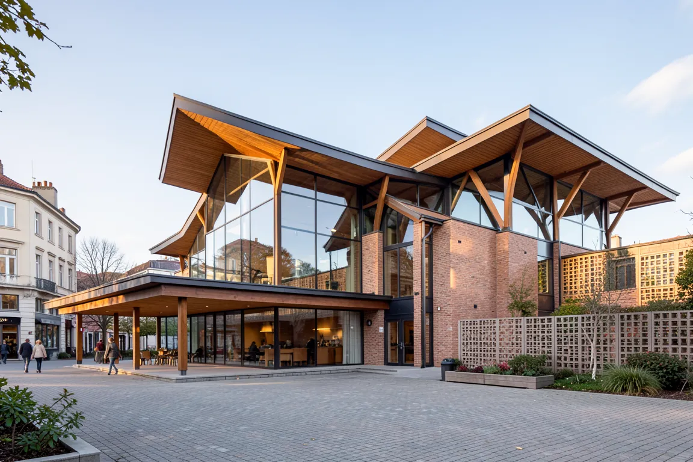

arkitektur · 1940s–1960s · også: Californiamodernisme, Case Study House-stil, Usonian-påvirket modernisme
Et lavt hus av stolpe-og-bjelke i tre eller stål, med glassvegger mot hagen, et flatt eller lavt tak og en varm palett. Det gjorde den internasjonale stilen hjemlig og tilpasset den klima, familie og bil.

Kjerneidé
Moderne arkitektur kan være varm: den frie planen og glassveggen tjener hverdagslivet, og huset hører til hagen sin.
Designprinsipper
Bygg på et stolpe-og-bjelke-skjelett med en modul på 1,2m (4 fot) eller 1,5m, slik at vegger, dører og glass passer rutenettet.
Hold huset lavt: én etasje, eller to med halvplan, med takhøyde på 2,4 til 2,7m.
Åpne den ene langsiden mot hagen med glass fra gulv til tak eller skyvedører, 50 til 80 % av den veggen.
Før taket ut i et bredt utstikk på 0,9 til 1,5m, med flat eller lav helling på 1:12 til 3:12, slik at skyggen blir en del av glassveggen.
Bruk varme naturmaterialer inne og ute: tretak, murstein eller steinvegger som motiv, og skifer- eller terrazzogulv.
Plasser en massiv kjerne, peisen og servicedelen, i midten, og la oppholdsrommene vikle seg rundt den.
Antimønstre
Bratte skråtak med små gavler
Påsatt historisk ornament eller kolonial pynt
Lukkede, oppdelte rom uten utsikt til hagen
Kalde, helt hvite og helt glassede flater uten tre eller stein